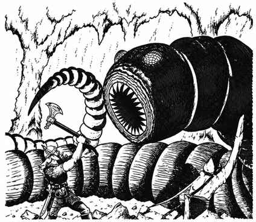

紫虫 · Purple Worm
 |
|
紫虫在地下深处不断钻掘寻找食物，能在 60 尺外感知震动并前往攻击。通常遇到的是成年个体，直径约 8 尺 4 寸、长 40–50 尺；幼虫直径 1 尺、孵化时约 5 尺长，一次通常孵化 10–20 只，每只 1 骰加 4 点生命值。紫虫回巢休息，并排出金属与矿物晶体等无法消化的废物。
紫虫用咬攻击，造成 2–24 点伤害；若生命骰超过所需数值 4 点以上（或无论所需数值如何掷出 20），便会吞下目标。成年紫虫能吞下身高约 8 尺、宽约 6 尺的生物；被吞下者 6 轮内死亡，12 轮后完全消化，无法复活。被吞下者可尝试从胃中切出；胃内护甲等级为 9，而且每在体内一轮，所有攻击伤害 −1，这一惩罚累积。紫虫尾部另有毒刺，通常只用于背后防御或在宽阔空间对付大型或众多敌人；刺击造成 2–8 点伤害，毒素豁免失败则死亡。斑纹虫是紫虫的水生种类，生活在浅水底泥中但会上浮捕猎，其他特征相同。